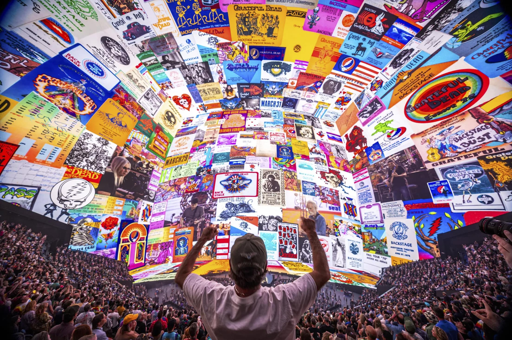
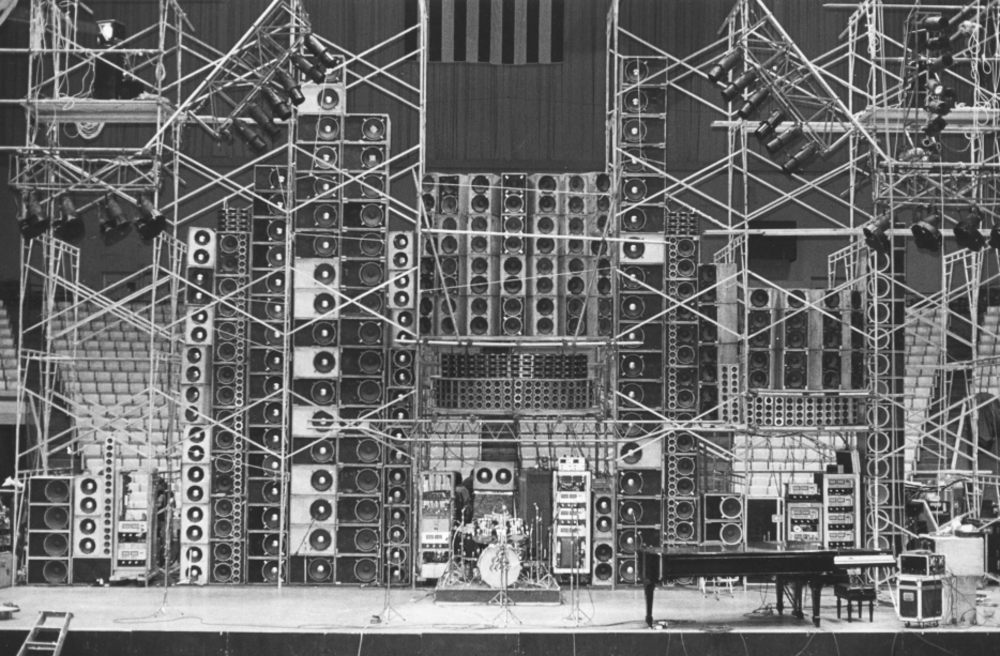
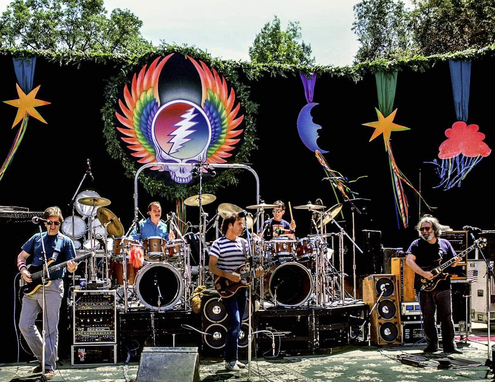
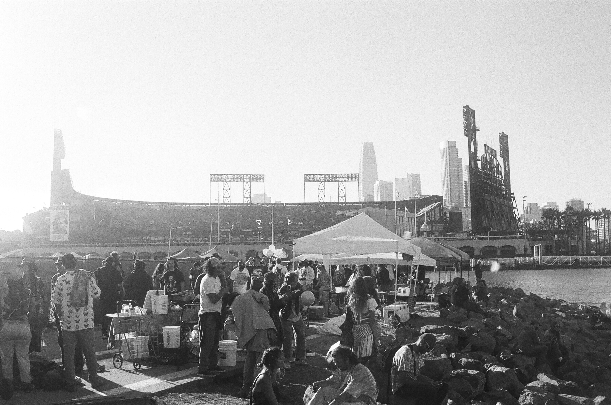
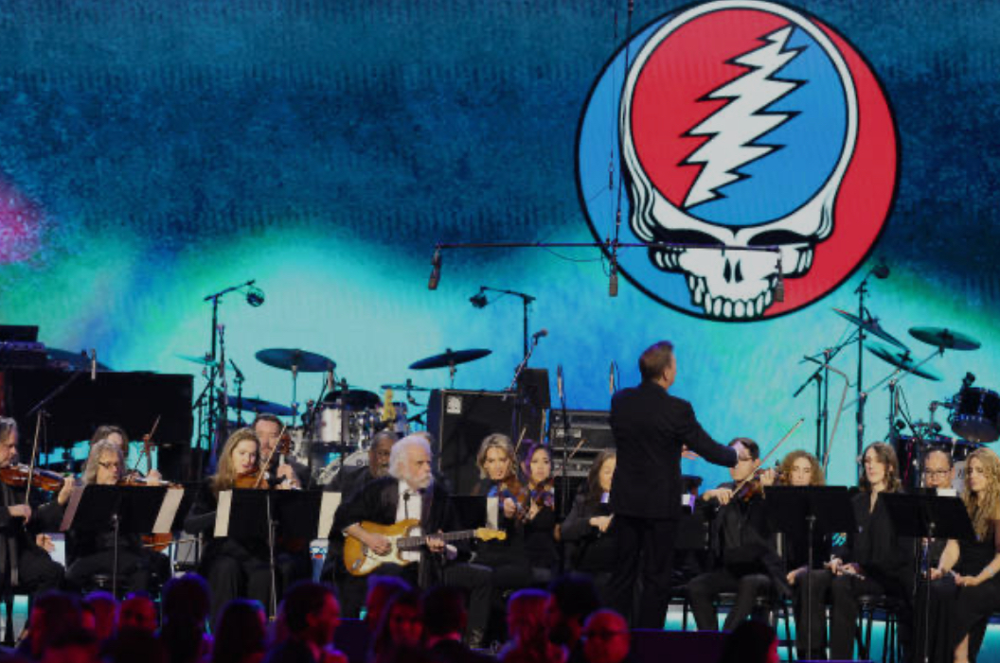
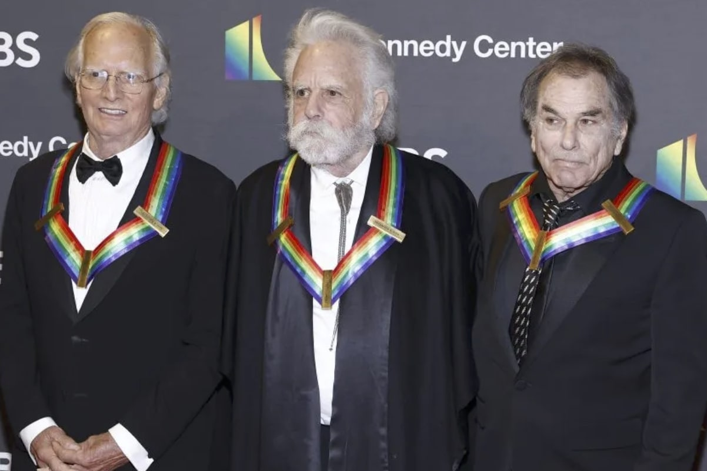
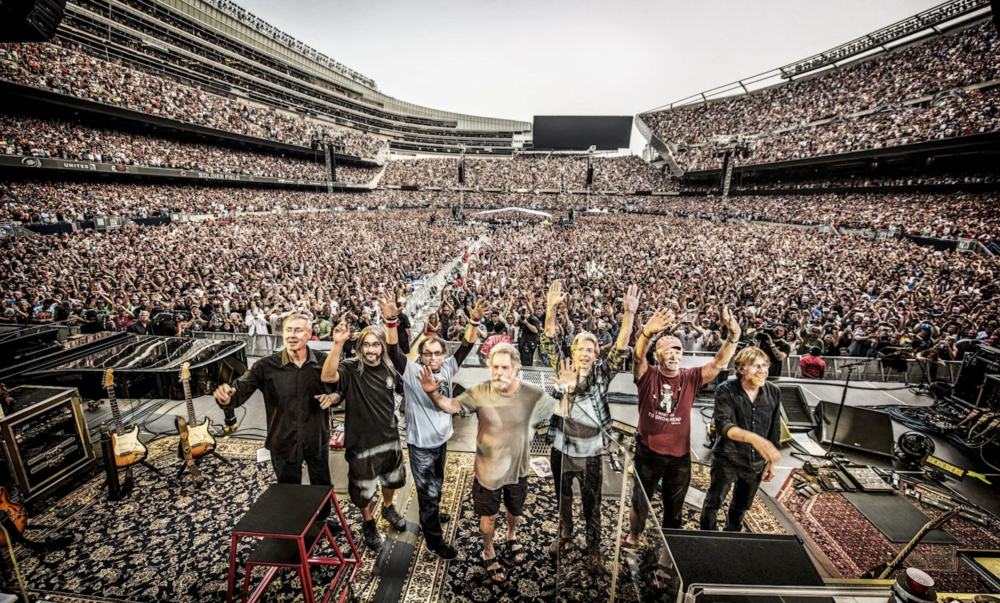
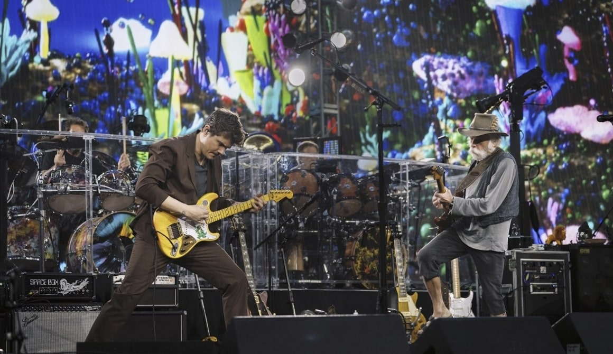

Shows
Shakedown
Archive
Gallery
Newsletter

Inside the Sphere

The Wall of Sound (1974)

Intimate Dead show

Shakedown Street, SF

SF Symphony tribute

Kennedy Center Honors
Tapers’ Section

Deadhead audience

Bob Weir & John Mayer